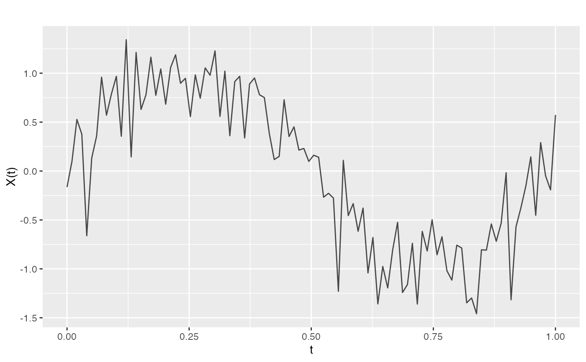

Fits penalized B-splines (P-splines) to functional data with automatic or manual selection of the smoothing parameter.
Arguments
- fdataobj
An fdata object.
- nbasis
Number of B-spline basis functions (default 20).
- lambda
Smoothing parameter. Higher values give smoother curves. If NULL and lambda.select = TRUE, selected automatically.
- order
Order of the difference penalty (default 2, for second derivative penalty).
- lambda.select
Logical. If TRUE, select lambda automatically using the specified criterion.
- criterion
Criterion for lambda selection: "GCV" (default), "AIC", or "BIC".
- lambda.range
Range of lambda values to search (log10 scale). Default:
10^seq(-4, 4, length.out = 50).
Value
A list of class "pspline" with:
- fdata
Smoothed fdata object
- coefs
Coefficient matrix
- lambda
Used or selected lambda value
- edf
Effective degrees of freedom
- gcv/aic/bic
Criterion values
- nbasis
Number of basis functions used
Details
P-splines minimize: $$||y - B c||^2 + \lambda c' D' D c$$ where B is the B-spline basis matrix, c are coefficients, and D is the difference matrix of the specified order.
References
Eilers, P.H.C. and Marx, B.D. (1996). Flexible smoothing with B-splines and penalties. Statistical Science, 11(2), 89-121.
Examples
# Create noisy data
t <- seq(0, 1, length.out = 100)
true_signal <- sin(2 * pi * t)
noisy <- true_signal + rnorm(100, sd = 0.3)
fd <- fdata(matrix(noisy, nrow = 1), argvals = t)
# Smooth with P-splines
result <- pspline(fd, nbasis = 20, lambda = 10)
plot(fd)

lines(t, result$fdata$data[1, ], col = "red", lwd = 2)
#> Error in plot.xy(xy.coords(x, y), type = type, ...): plot.new has not been called yet
# Automatic lambda selection
result_auto <- pspline(fd, nbasis = 20, lambda.select = TRUE)